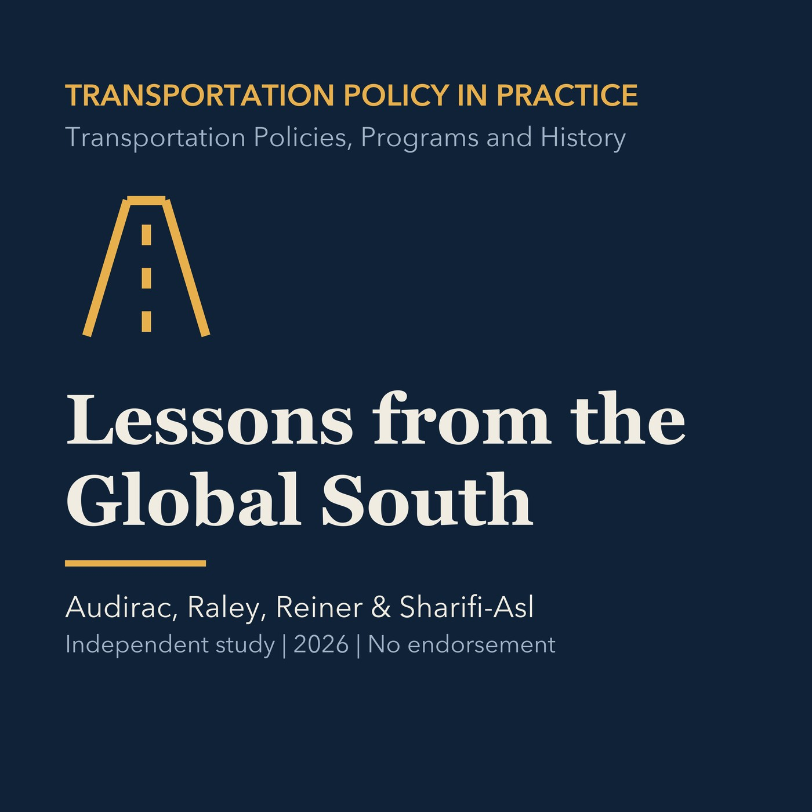

EPISODE 10
Lessons from the Global South
Studies formal and informal mobility, bus rapid transit, and context-sensitive innovation while carefully separating a Torrance comparison.

- Stable GUID
ec67455f-2470-53d3-849c-cf70657b27ae- Release
- transportation-policies-programs-history-v2026.3
- SHA-256
2f68faf6731f9e3f4fc2c7438a162408e33f6f375c2c9ce40d299e6eca42192f